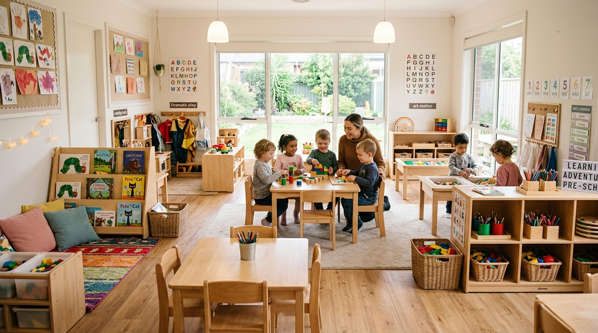

Empowering Every Child's Journey Through Specialized Early Intervention
A welcoming, evidence-based learning environment supporting developmental growth, social-emotional skills, and individualized Specially Designed Instruction for children birth to 5 years across Maine.

Comprehensive Service Paths Designed for Every Child
Whether your child is reaching milestones in our inclusive preschool or requires early intensive behavior intervention, our clinical expertise and caring team are here.
Inclusive Preschool Education
Year-round preschool following Maine's official Pre-K for ME curriculum. Designed for four-year-olds to build social-emotional, executive function, language, literacy, and math skills through intentional play.
- Aligned to Maine Early Learning Standards
- Rich play-based whole child development
- Small and large group peer interaction
Early Intervention & Specially Designed Instruction
Individualized programs for children diagnosed with Autism or developmental delays based on Applied Behavior Analysis (ABA). Focused on skill acquisition, language, self-care, and positive behavior replacement.
- 50+ years of NIH & Surgeon General endorsed research
- Discrete Trial & Natural Environment Teaching
- Close family collaboration & home consistency
What Families Say About Discovering Kids
"This program has been absolutely amazing for my child and our family. One of the biggest changes I've noticed is that he has fewer meltdowns and is learning how to use his words when he becomes upset."
"Discovering Kids has had a profound and positive impact on my family's life. As a caregiver, Discovering Kids has provided me with valuable education, guidance and, most importantly, greater confidence."